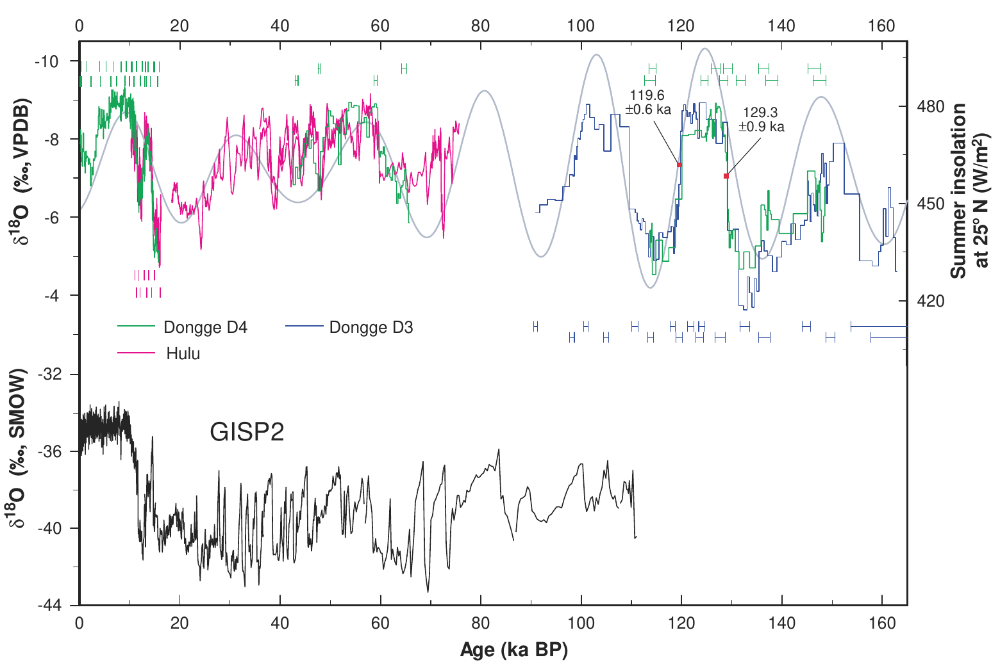
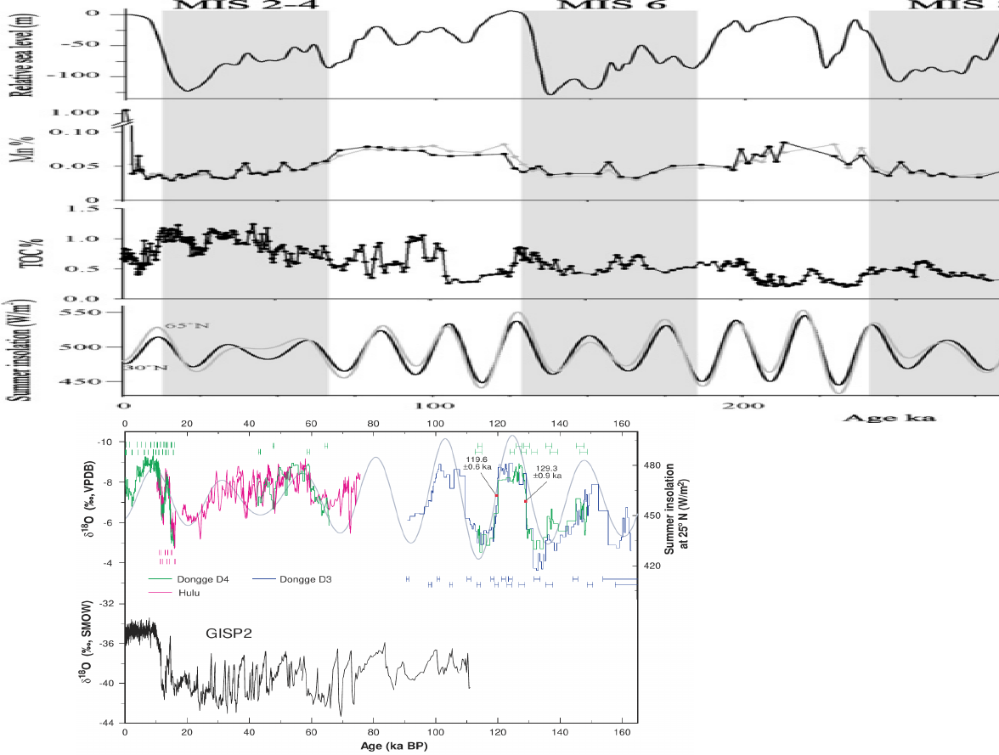

SCE Closing and the paleomonsoon
Table of Contents
Introduction
This is a proposal for a research project to look into the correlation between the closing of the South China Sea and the variability in the O18 concentrations as found in the regional cave record. As observed in previous studies, O18 concentrations can be used to reconstruct the intensity of historical monsoons. These studies have shown that monsoon intensities seem to be biphasic. They switch between high and low intensity states in accordance to changes in insolation. However looking solely at O18 concentrations in caves gives us a limited ability to infer past monsoon intensities because the isotope concentration in the original monsoon source water bodies have their own dynamic which affects the resulting O18 concentrations. By looking at caves in South China we should be able to resolve the closing of the South China Sea during low sea levels. This should present itself as a sharp change in isotope concentration. If the effect can be quantified then it can be used to correct the cave's O18 concentrations and allow us to have a more direct observation of historical monsoon intensities.
Cave Records
One very successful existing approaching to reconstructing historic changes in the monsoon has been to look at the record of O18 deposition in stalagmites. Because of the chemical process of dissolution and precipitation, the continual slow deposition of carbonate on stalagmites preserve a signal of the changing O18 concentration of the rain water above the cave site.
These resulting changes in O18 have been interpreted to be correlated to the strength of the summer monsoon. Relative to local precipitation sources the summer monsoon brings enormous amounts of moisture over very long distances. Earlier rain outs from this large traveling water mass will preferentially take out heavier molecules of H2O that contain O18 leaving the remaining water mass lighter. As a result, the final moisture that precipitates over the cave site is O18 depletes. Rain during non-monsoon periods are presumed to not undergo the same degree of fractionation because of the shorter travel time and are thus O18 "heavy". The net effect is that the resulting O18 concentration in the stalagmites roughly represent the ratio of summer-monsoon to off-season precipitation. If we then assume local/off-season precipitation remains mostly stable over time then the changes in O18 are dominated by changes in the summer monsoon. So the O18 concentrations will function as a proxy for monsoon intensity.
The resulting O18 concentration in the stalagmite will look something like the following:

This plot is from "Timing, Duration, and Transitions of the Last Interglacial Asian Monsoon" by Daoxian Yuan and Hai Cheng. The upper half shows the changes in O18 over time in several stalagmites. We can clearly see the characteristic fluctuations that seem to "jump" between two states due to changes in insolation. These two states are especially apparent on the right hand side (100-160 ka BP). Note how they seem to show very little transition time. This on-off pattern reoccurs in other studies. However, the records are never entirely consistent. We see here both several transition that are relatively smooth (~140 ka BP) and several on-off states that are seemingly lower/higher than the others (~40 ka BP and ~150 ka BP).
The past authors, such as the ones from Hai Cheng's group, have been careful to not use these O18 measurements as direct proxies for monsoon strength. However getting a better estimate of actual monsoon strength should be possible through looking at multiple proxies simultaneously and modeling the changes in source O18 concentration.
The South China Estuary
A progressive effort to reconstruct changes in the source O18 concentration would help us get a closer estimate of the original historical monsoon strengths as well as to tease out which artifacts are due to changes in source concentration and which changes are due to anomalies in the monsoon strength.
Rather alarmingly, some studies like "Orbital‐scale timing and mechanisms driving Late Pleistocene Indo‐Asian summer monsoons: Reinterpreting cave speleothem δ18O" by Clemens et al. (2018) contend that almost all changes in cave O18 are due to changes in source O18.
When it comes to the South China region, at face value the most stark change should be the closing of the South China Sea due to changes in sea level. A describes by Professor Ludvig Lowemark in "New evidence for a glacioeustatic influence on deep water circulation, bottom water ventilation and primary productivity in the South China Sea", the change at the start of glacial periods is rather abrupt.
During glacial periods the South China Sea becomes almost entirely cut off from the wider ocean and coastal upwelling ceases. With no upwelling and a severely reduced exchange with the Pacific Ocean we can infer that there should be a large change in overall salinity as well as the formation of a fresh water "lid". Stagnant surface waters could also lead to notable changes in sea surface temperatures.
Both salinity and temperature are primary drives of O18 concentration in the resulting evaporation. If the shut down of upwelling is as abrupt as predicted then these changes should lead to immediate shifts in the O18 concentrations of regional monsoon precipitation.
Corrected Caves
For the moment the change in upwelling has been primarily registered through Mn%. Further research would be needed to estimate the changes in sea surface temperature and salinity that I hypothesized. However, both these factors have been previously observed through other proxies like foraminifera. If these two factors could be estimated for glacial periods in the South China Sea then the changes in the monsoonal "starting" O18 concentration could be calculated. With a bit more effort the resulting change in O18 concentration in the precipitation over the cave site could be estimated as well.
With glacially induced changes in O18 estimated we should then be able to add a correcting factor to the values extracted from the South China stalagmites. These corrected values should then provide us with a much better picture of the actual changes in monsoon intensity.
A very rough overlay of the two does provide a tantalizing hint that "problematic" regions of the stalagmite record do in fact correspond to glacial periods

It's important to also note that the glacial periods (and corresponding sea level changes) do not closely correspond to insolation changes - so this gives us hope of being able to separate out the effect of the two forcing mechanism and to be able to better model the monsoon system during these low sea level periods
Ref
Clemens, S. C., Prell, W. L., and Sun, Y. (2010), Orbital‐scale timing and mechanisms driving Late Pleistocene Indo‐Asian summer monsoons: Reinterpreting cave speleothem δ18O, Paleoceanography, 25, PA4207, 10.1029/2010PA001926.
"Orbital‐scale timing and mechanisms driving Late Pleistocene Indo‐Asian summer monsoons: Reinterpreting cave speleothem δ18O" by Clemens et al. (2018)
L. Löwemark et al (2009) "New evidence for a glacioeustatic influence on deep water circulation, bottom water ventilation and primary productivity in the South China Sea" Dynamics of Atmospheres and Oceans, Volume 47, Issues 1–3,
"Timing, Duration, and Transitions of the Last Interglacial Asian Monsoon" by Daoxian Yuan and Hai Cheng Science 23 Apr 2004 : 575-578